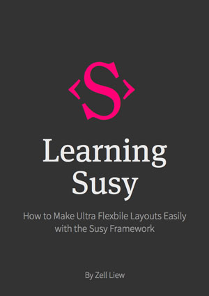

Stuff I made
I grouped the things I made into three categories. Feel free to check them out :)
Zell is a very talented developer with in-depth knowledge of various front-end technologies and tools. He's not only proficient at his work, but he also regularly shares his knowledge with the community. His books and articles are so well written and so full of useful information that I would recommend them to everyone in the web development industry. Zoran Jambor, CSS Weekly curator
Enjoy these free libraries I made!
Adaptive-placeholders
Float label pattern built with pure SCSS. Check out adaptive-placeholders.
Books. Hmmm. Good stuff.
Learning Susy
Bootstrap makes your HTML messy by cluttering it up with grid classes like col-md-6.
Susy provides you with an alternative where can keep your code neat and tidy while still have the flexibility to make any layout you want. It’s even more flexible than Bootstrap!
Find out how to start using Susy today with 7 free chapters.
Check out Learning SusyAutomating Your Workflow
Have you had days where it’s suddenly 5pm, and you haven’t done anything constructive yet? Me too. It’s been like this forever and I’m sick of it.
One day, I found out that I’m spending too much time on repetitive tasks. I decided to learn how to automate them away. After doing so, I now have more time to write, design and learn new stuff every single day.
That’s what I’m going to teach you in Automating Your Workflow. Start reclaiming your free time with 10 free chapters.
Check out Automating Your WorkflowAhhhhh. Courses.
Mastering Responsive Typography
Want to build beautiful websites with great typography without resorting to hacky CSS?
I’ll show you exactly how in Mastering Responsive Typography. You’ll first learn typography and design fundamentals, then how to integrate these fundamentals into real, working code.
Get the first 3 lessons free today.
Check out Mastering Responsive Typography